Гриф в деке от астра
Обновление A3: усиленные кривошипы
Шея кривошипов 1–3 расширена до Ø16,6 мм, как верхний диск. Внизу сохранён участок Ø8,4 мм под существующий проход основания. Расширение начинается на Z=3,4 мм, выше дна толщиной 3 мм, и выполнено конусом. На высоких кривошипах 2 и 3 выше конуса идёт цилиндр Ø16,6 мм; на низком кривошипе 1 конус доходит до диска.
Посадочное отверстие Ø5,8 мм, его глубина, верхний диск и палец привода не изменены. Кривошип 0 остался прежним. Собирай в том же порядке, но кривошипы 1–3 бери с маркировкой A3 в имени файла.
Геометрическая проверка добавленного материала учитывает весь оборот и полный ход лент ±4,8 мм. Минимальный найденный зазор до неизменённых деталей — около 0,61 мм у основания. Это не испытание прочности и не проверка печати: более толстая шея не устраняет люфт на шестерне или в подшипниках мотора. Проверь нарезку конуса, поддержку нависающих участков и чистоту посадочного отверстия. На кривошипе 1 конус круче, чем на 2 и 3.
Начни здесь
Основание и опоры A2, усиленные кривошипы A3. Ниже — последовательность от печати до проверки собранной механики. Иллюстрации сделаны из настоящих CAD-деталей A2; это не фотографии уже собранного образца. Стрелки показывают нужные места, а на некоторых крупных планах борта скрыты.
Секции грифа 1–3 с четырьмя тележками и лентами предполагаются уже собранными. Если они ещё не готовы, сначала собери гриф по прежней инструкции.
Если основание Д1 и опоры A2 уже напечатаны, их сохраняй: для усиления нужно заменить только кривошипы 1, 2, 3 из файла №4 ниже. Кривошип 0, проставку, моторные посадки и ленты менять не нужно.
Файлы для печати
Нажми на синее название нужного файла. В 3MF уже расположены детали в нужном количестве. Это универсальные файлы геометрии, не готовый G-code и не профиль конкретного принтера.
| Что скачать | Что внутри | Нужно тебе |
|---|---|---|
| 01 — Д1 и три опоры A2, 3MF | Новое Д1: 1 шт.; цельная опора: 3 шт. | Печатать |
| 04 — усиленные кривошипы 1–3, 3MF | Усиленные кривошипы 1, 2, 3: по 1; без кривошипа 0 и проставки | Печатать для усиления; кривошип 0 и проставку оставить прежние |
| 03 — четыре хвостовые ленты, 3MF | Ленты 0, 1, 2, 3: по 1 | Только если нет деталей v3 |
| Д2 v3, отдельный STL | Дальнее основание: 1 шт. | Только если Д2 v3 ещё не напечатан |
Детали из старой деки NEMA17 и детали v3 под круглый NEMA14 — не одно и то же. Если происхождение кривошипа или хвоста неизвестно, сравни с соответствующим файлом ниже.
Отдельные STL
| Деталь | Прямая ссылка | Количество в узле | Превью |
|---|---|---|---|
| Новое Д1 | astra_d1.stl | 1 | 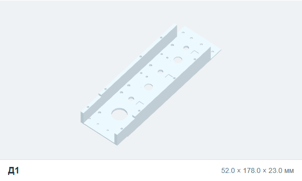 |
| Цельная опора A2 | astra_closed_guide.stl | 3 | 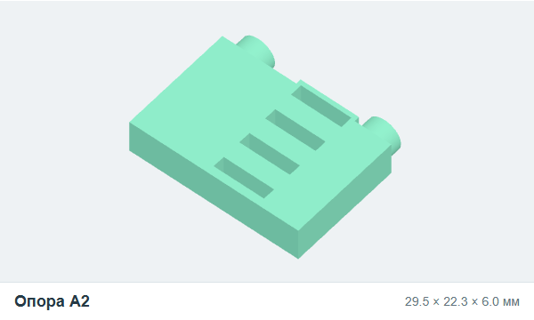 |
| Д2 v3 | reference_d2_v3.stl | 1 | 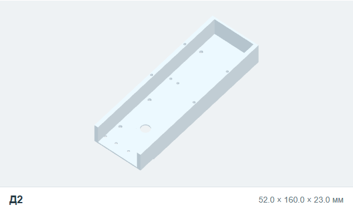 |
| Проставка 4 мм | reference_spacer0_v3.stl | 1 | 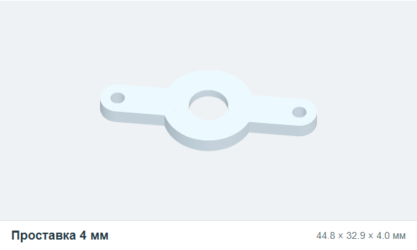 |
| Кривошип 0 | reference_crank0_v3.stl | 1 | 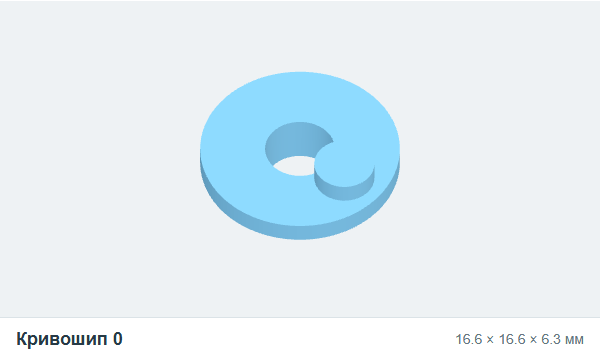 |
| Кривошип 1 | astra_crank1_A3.stl | 1 | 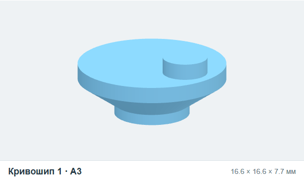 |
| Кривошип 2 | astra_crank2_A3.stl | 1 | 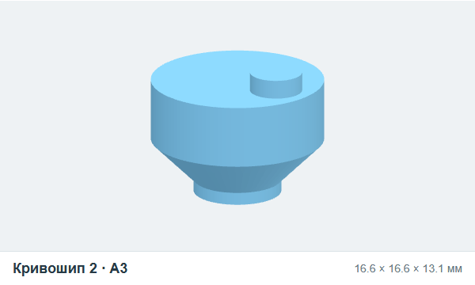 |
| Кривошип 3 | astra_crank3_A3.stl | 1 | 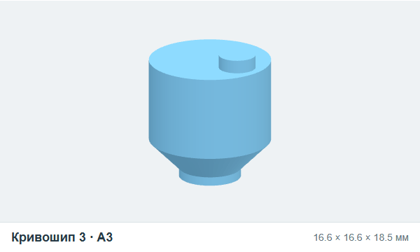 |
| Лента 0, самая короткая | reference_tail0_v3.stl | 1 | 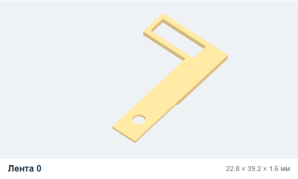 |
| Лента 1 | reference_tail1_v3.stl | 1 | 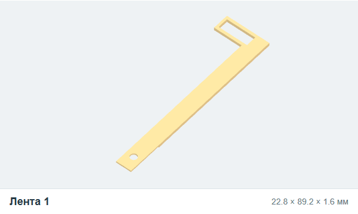 |
| Лента 2 | reference_tail2_v3.stl | 1 | 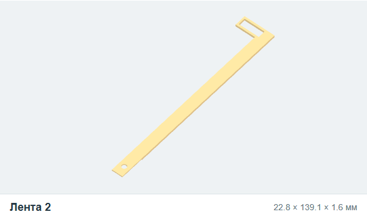 |
| Лента 3, самая длинная | reference_tail3_v3.stl | 1 | 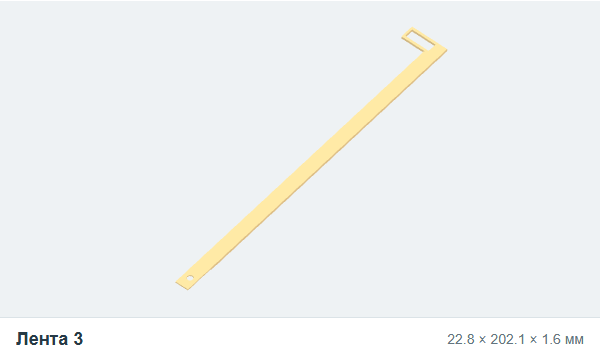 |
Выбирай либо общий 3MF, либо отдельные STL, не оба сразу: иначе напечатаешь дубликаты. Необязательный маленький фрагмент Д1 для примерки оставлен в файлах, но печатать его или новый купон не требуется.
Что положить рядом
| Что | Сколько | Для чего |
|---|---|---|
| Твои круглые NEMA14 с шестернёй | 4 | Моторы 0–3 |
| М3×4 | 3 | Стык Д1/Д2 |
| М3×5 | 6 | По два для моторов 1–3; длина из v3 |
| М3×10 | 2 | Мотор 0 через проставку; длина из v3 |
| Подходящий шестигранник или отвёртка | 1 | Под имеющиеся головки |
| Линейка и маркер | По 1 | Проверка хода и подпись номеров |
Для трёх зелёных опор не нужны ни винты, ни гайки, ни клей. Длины моторных винтов примеряются до затяжки: глубина резьбы в реальном моторе не измерена. Винт должен прижать ухо, а не упереться концом в дно отверстия.
Работай с отключённым питанием. Если сборкой занимается ребёнок — снятие деталей с горячего стола, удаление поддержек и подключение питания выполняет взрослый.
Шаг 00. Напечатай новые детали
Скачать: 01_A2_D1_and_3_guides.3mf.
- Открой 3MF в Bambu Studio или другом совместимом слайсере. Это файл моделей, а не сохранённый профиль Bambu: выбери свой принтер и своё сопло. Если программа предлагает загрузить модели без настроек, выбери этот вариант.
- Выбери тот же пластик и успешный профиль, с которым старые круглые ножки хорошо вставлялись. Не меняй масштаб: 100%, миллиметры.
- Проверь количество: одно длинное Д1 и три одинаковые зелёные опоры. Опоры лежат широкой гранью на столе.
- Выполни нарезку и просмотри слои. У Д1 проверь поддержку под приподнятой северной полкой; при необходимости используй поддержки от стола. Не заполняй ими отверстия посадки и окна опор. Усиленным кривошипам из файла №4 может потребоваться поддержка под дисками.
- После печати дождись остывания стола. Удали поддержки и нити, не рассверливай посадочные отверстия «на всякий случай».
Габарит раскладки файла №1 около 92 × 178 мм без полей слайсера; №4 около 67 × 17 мм; №3 около 122 × 203 мм. Убедись, что всё помещается на столе вместе с выбранными полями, юбкой или бримом.
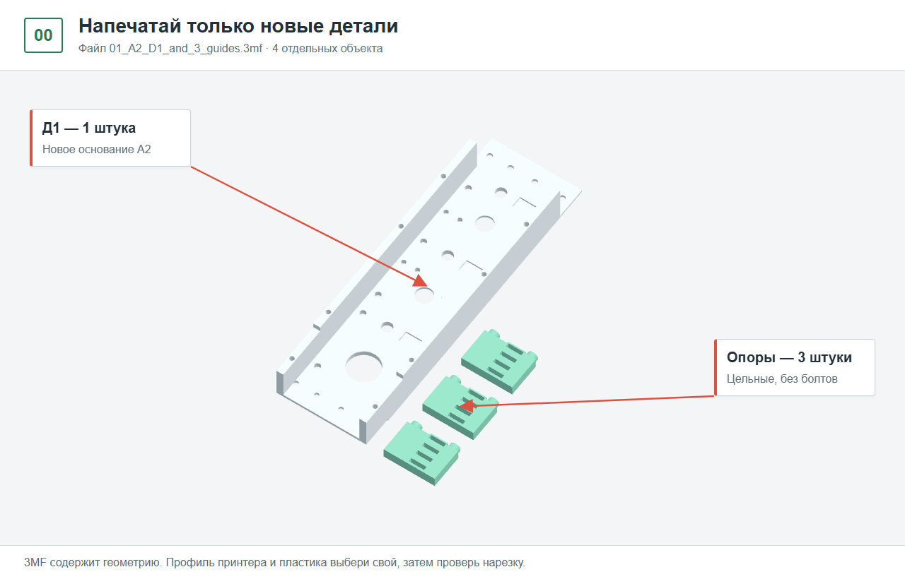
Готово, если: на столе лежат одно Д1 A2 и три целые опоры; круглые ножки и нижние перемычки не повреждены.
Шаг 01. Найди Д1 и Д2
Взять: новое Д1 и уже напечатанное Д2 v3.
Д1 — длинная часть с тремя местами под моторы, она ближе к грифу. Д2 — дальняя часть с одним местом под мотор. Положи их как на рисунке. Д1 с длинными пазами от E-гребёнок использовать нельзя: в A2 нужны круглые отверстия.
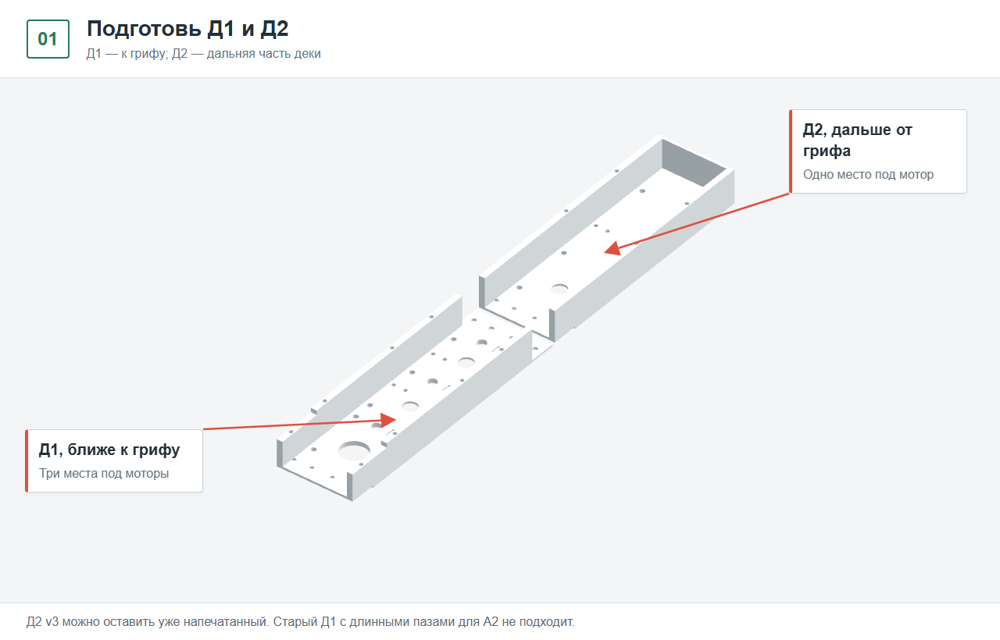
Готово, если: обе части смотрят жёлобом вверх; дальний конец Д1 с тонкой полкой направлен к Д2.
Шаг 02. Соедини основание
Взять: три винта М3×4.
- Опусти вырезанный конец Д2 на тонкую полку Д1.
- Совмести отверстия.
- Вставь снизу два крайних винта и один средний со стороны, противоположной лентам.
- Среднее отверстие со стороны лент оставь пустым; оно показано стрелкой.
- Подтяни винты по очереди, без выгибания пластика.
На крупном плане борта скрыты, чтобы было видно стык. В обычном виде жёлоб остаётся направленным вверх.
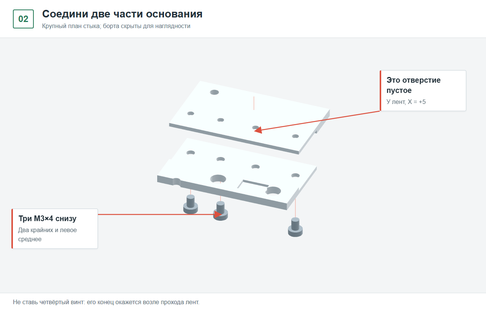
Готово, если: стык ровный, половины не качаются и не расходятся. Координаты установленных винтов: X=-21, -9, +21; пустое отверстие X=+5.
Шаг 03. Поставь мотор 0 с проставкой
Взять: первый мотор, проставку 4 мм, два М3×10 для примерки.
- Найди большое отверстие у переднего края Д1, ближайшего к грифу.
- Подложи проставку между мотором и основанием.
- Подведи мотор снизу: круглый выступ и шестерня смотрят вверх.
- Поверни уши по двум отверстиям в основании.
- Вставь винты сверху через Д1 и проставку в уши мотора. Затяни только после проверки длины.
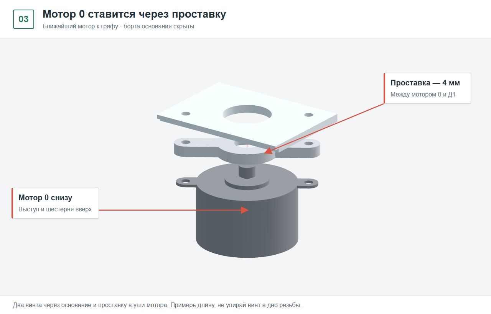
Готово, если: мотор 0 стоит ровно, ниже остальных на толщину проставки, и не качается.
Шаг 04. Поставь моторы 1, 2, 3
Взять: остальные три мотора, шесть М3×5 для примерки.
Моторы нумеруются от грифа: 0, 1, 2, 3. Моторы 1 и 2 стоят в Д1, мотор 3 — в Д2. Под ними проставок нет.
Вставляй каждый мотор снизу, выставляй уши и закрепляй двумя винтами сверху. Провода пока отведи наружу, в сторону от кривошипов и лент.
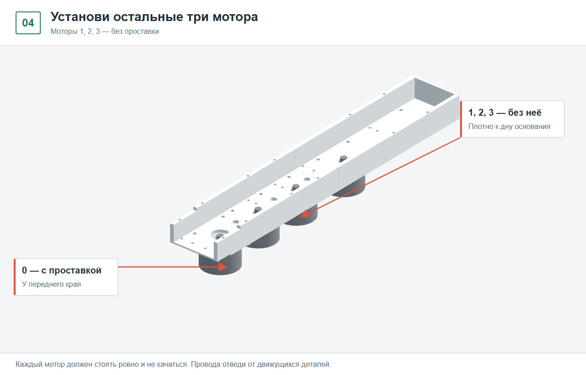
Готово, если: все четыре мотора закреплены; только под мотором 0 есть проставка. Корпуса и разъёмы не касаются друг друга.
Шаг 05. Разложи кривошипы 0–3
Взять: кривошип 0, 1, 2, 3. Если их ещё нет: файл №4 с усиленными кривошипами 1–3.
Кривошип — синяя деталь с диском и пальцем. Номер кривошипа совпадает с номером мотора. У 0 самая низкая конструкция; у 3 самая высокая. Сразу подпиши номера на нерабочей поверхности, не на пальце и не внутри посадочного отверстия.
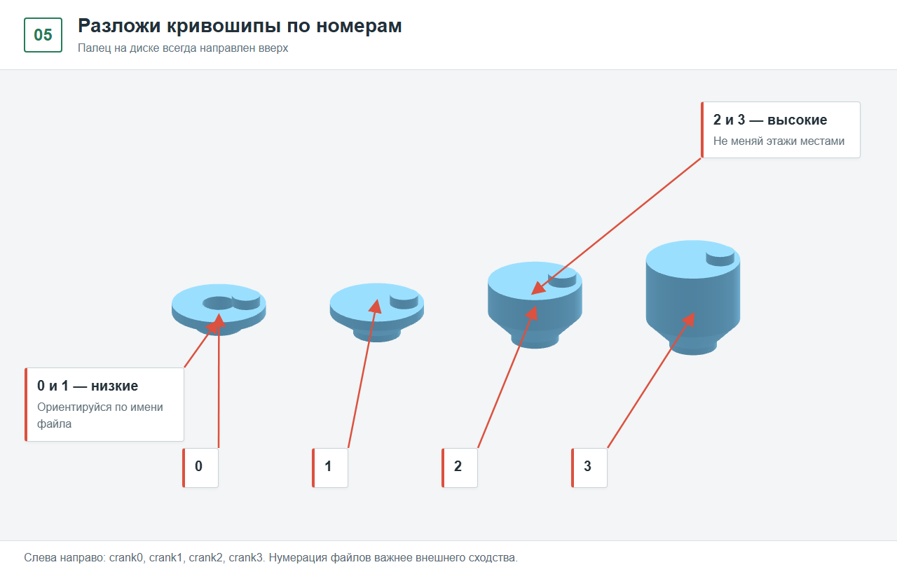
Готово, если: четыре детали разложены по номерам. Не выбирай их только по внешнему сходству.
Шаг 06. Надень кривошипы
Начни с кривошипа 0 и мотора 0. Надень ступицу на шестерню, палец вверх. Поверни палец в сторону полосы, по которой пойдут оранжевые ленты. Затем повтори для моторов 1, 2, 3.
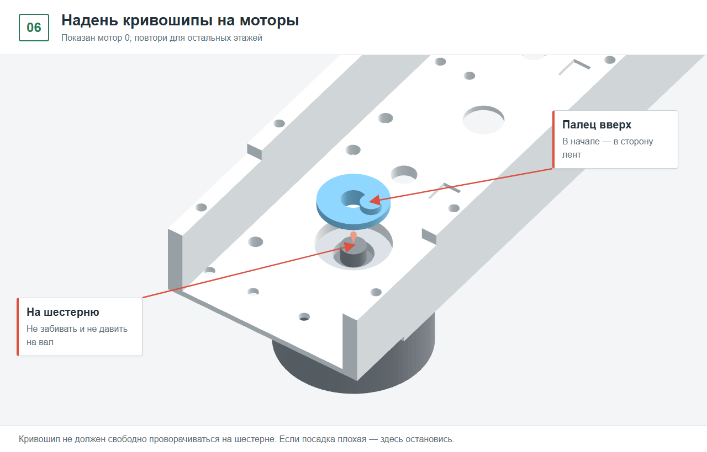
Готово, если: кривошип не болтается и не прокручивается отдельно от шестерни. Не забивай его молотком и не запрессовывай усилием через подшипники мотора. Если не садится или проскальзывает — остановись, сначала нужно решить посадку ступицы. В сохранённой v3 отверстие круглое Ø5,8 мм; удачная посадка опор не подтверждает посадку на шестерню.
Шаг 07. Продень первую ленту через опору
Взять: ленту 1 и одну опору A2.
Это делается отдельно от основания, пока хвосты не соединены с продолжениями из грифа.
- Поставь опору ножками вниз.
- Считай окна снизу: 0, 1, 2, 3.
- Введи узкий передний конец ленты 1 во второе окно снизу, то есть окно 1.
- Протяни ленту до положения, показанного в следующем шаге. Широкая рамка остаётся с моторной стороны.
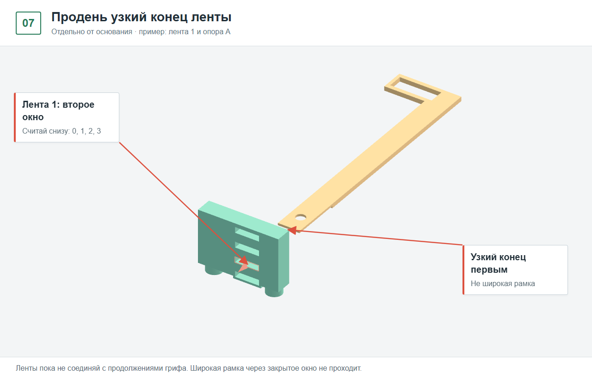
Готово, если: лента 1 скользит во втором окне. Широкую рамку не пытались протолкнуть через опору.
Шаг 08. Добавь остальные ленты и опоры
Взять: ещё две опоры, ленту 2, ленту 3. Общая печать лент при необходимости: файл №3.
Назови опоры А, Б, В по направлению от грифа. Они одинаковые, номера нужны только для удобства сборки.
| Лента | Через какие опоры пропустить узкий конец | Окно снизу |
|---|---|---|
| 0, самая короткая | Ни через одну | Не используется |
| 1 | А | Второе, номер 1 |
| 2 | Сначала Б, затем А | Третье, номер 2 |
| 3, самая длинная | Сначала В, затем Б, затем А | Четвёртое, номер 3 |
Сдвинь опоры вдоль лент примерно к соответствующим парам отверстий основания. Окончательное положение зададут ножки и отверстия; измерять расстояния линейкой для сборки не нужно.
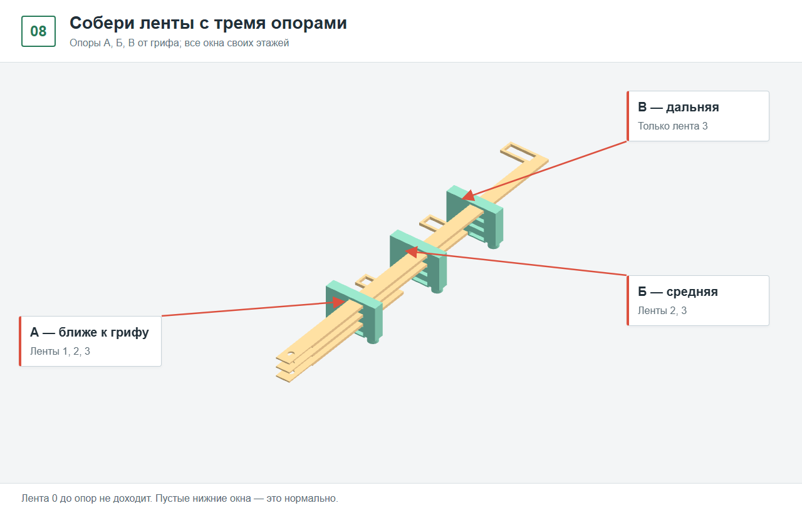
Готово, если: получается как на рисунке: через А проходят три ленты, через Б две, через В одна. Пустые нижние окна — нормально.
Шаг 09. Опусти комплект на место
Взять дополнительно: ленту 0, самую короткую.
- Ленту 0 положи отдельно: её рамка надевается на палец кривошипа 0, узкий конец смотрит к грифу.
- Поддерживая остальные ленты, поднеси комплект с опорами над основанием.
- Совмести ножки опоры А с первой парой круглых отверстий, Б со второй, В с третьей.
- Одновременно направляй широкие рамки лент 1–3 на пальцы своих кривошипов.
- Опускай понемногу, не надавливая на тонкие ленты. Если рамка не попадает, слегка поверни её кривошип.
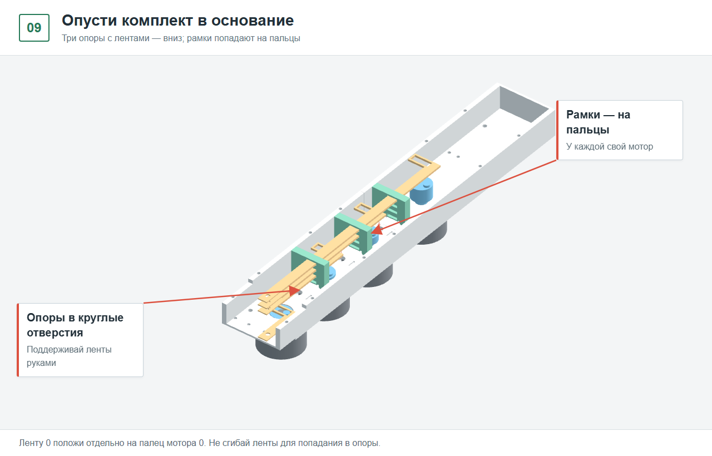
Готово, если: все четыре рамки лежат на своих пальцах, а ножки трёх опор начали входить в отверстия. Этот порядок проверен геометрически, но ещё не отработан руками на A2; если неудобно удерживать комплект, нужна помощь второй пары рук, а не усилие.
Шаг 10. Посади опоры до упора
Нажимай над левой и правой ножкой опоры равномерно. Не дави на середину тонкой перемычки. Повтори для А, Б и В.
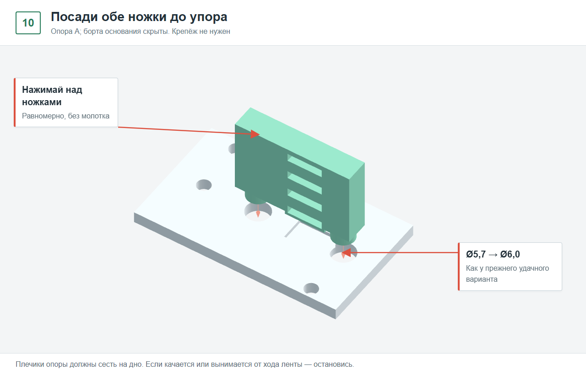
Готово, если: плечики обеих сторон опираются на основание, опора не качается и ленты по-прежнему свободно ходят. Никаких болтов, гаек и клея. Посадка повторяет прежний удачный вариант: штыри Ø5,7 мм, отверстия Ø6,0 мм, заход 2,8 мм; новый купон не нужен при прежнем успешном процессе печати.
Шаг 11. Соедини ленты деки с грифом
Передние узкие концы четырёх хвостов теперь находятся у грифа. Сопоставь этажи: 0 к 0, 1 к 1, 2 к 2, 3 к 3.
Накрой нижний язычок ленты-продолжения верхним язычком хвоста из деки: высокий штырёк должен попасть в отверстие. На схеме продолжение окрашено зелёным только для различения деталей.
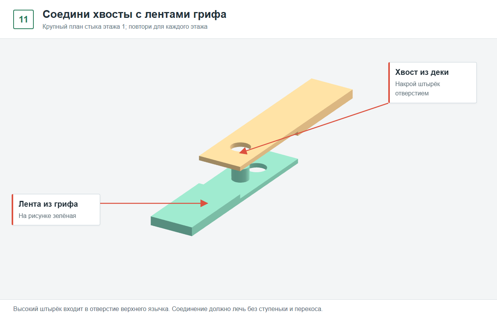
Готово, если: язычки легли друг на друга без перекоса, высокий штырёк попал в отверстие, стык не расходится при лёгком перемещении. Не пытайся протянуть уже собранный стык через закрытые окна опор.
Для механического стыка секции 3 и Д1 используется такой же нахлёст с тремя М3×4, как у Д1/Д2; оставь отверстие со стороны лент пустым. Это ещё три винта, если гриф не был уже прикручен к деке.
Шаг 12. Проверь сборку без питания
Вращай кривошипы по одному, медленно, на полный оборот. Остальные рукой не двигай. Идеальный ход свободного конца хвоста — около 9,6 мм от одного крайнего положения до другого. Это ход ленты, не гарантированный ход тележки.
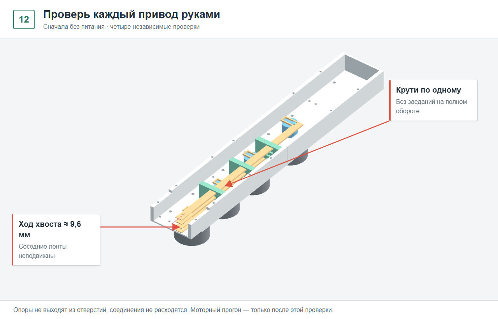
| Проверка | Что должно получиться | Отметка |
|---|---|---|
| Мотор 0 | Полный оборот без заеданий, двигается только его лента | ☐ |
| Мотор 1 | То же | ☐ |
| Мотор 2 | То же | ☐ |
| Мотор 3 | То же | ☐ |
| Три опоры | Не качаются и не выходят из отверстий | ☐ |
| Соединения лент | Не расходятся, не задевают опоры и винты | ☐ |
| Кривошипы | Не прокручиваются на шестернях | ☐ |
| Гриф | Каждая лента двигает свою тележку | ☐ |
Стоп, если: лента изгибается вместо движения; моторная ступица проскальзывает; опора поднимается; слышен треск; приходится прикладывать заметное усилие. Не пытайся «продавить мотором» плохую сборку.
На этом собран механический моторный узел грифа в деке. Электроподключение, настройка драйверов, моторный прогон под нагрузкой и установка внешнего корпуса — отдельные этапы.
Что проверено, а что нет
Отчёт CAD-проверок: валидность деталей, замкнутость STL, отсутствие пересечений новых опор с основанием, зазоры до габаритов моторов и движения кривошипов относительно опор. Сборка STEP и отдельная опора STEP доступны для осмотра.
Плотная посадка Ø5,7/Ø6,0 взята из прежней деки, которую владелец уже собирал. Это не означает, что весь вариант A2 прошёл физические испытания. Прочность, ресурс, трение, усилие выдёргивания и разъёмы реального двигателя пока не проверены. 3D-просмотрщик показывает кинематику, не MuJoCo-физику.
Моторный габарит сохранён из присланного чертежа: Ø36,5 × 22 мм, пилот Ø16 × 1,5 мм, межосевое креплений 43,85 мм. Размер резьбовой глубины и габарит разъёма необходимо учитывать при реальной примерке.
Старые вложения A1 на странице устарели. Используй ссылки в таблицах этой инструкции: они ведут к текущим файлам A2.